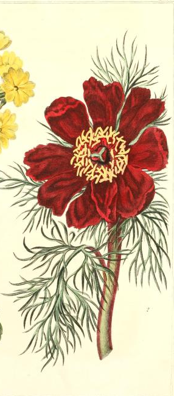

-
1. Amyrillis
Strength and Determination
"What slender campanili grew/ By bays, the peacock's neck in hue;/ Where, here and there, on sandy beaches/ A milky-bell'd amaryllis blew" -Alfred Lord Tennyson, "The Daisy" (1855)
The name Amyrillis derives from the Greek myth of the love Amaryllis held for Alteo. According to legend, Amaryllis fell deeply in love with a shepherd named Alteo from a distance, bereft that she may never see her ardor returned. Upon receiving advice from the Oracle of Delphi, she stood in front of Alteo's home for thirty consecutive nights, piercing her heart with a golden arrow. On the thirtieth and last night of her vigil, a scarlet flower grew from her blood and ultimately won her Alteo's unwavering love. Unlike other Greek myths depicting human transformation into flowers and other botanicals, which usually symbolize the fleeting nature of youth, Amarillis' story illustrates connections between persistence, suffering, and the ultimate reward of true love.
For the Victorians, the mythical origins of this flower combined with its height and sturdiness meant a deep association with determination, perserverance, and strength in adversity.

-
2. Azalea
Take Care of Yourself
"Some distance away is an azalea bush which stuns me with its stately beauty. This is pristine natural beauty, it is irrepressible, seeks no reward, and is without goal, a beauty derived neither from symbolism nor metaphor and needing neither analogies nor associations" -Gao Xingjian, Soul Mountain (1989)
As with most of the flowers included in this index, the origin stories of the azalea are numerous and culturally nuanced. According to one Chinese folktale, azaleas bloom when the cuckoo bird sings. In this story, a selfish king ruled over his kingdom with a violent and oppressive temper. His people suffered at first, then plotted his downfall via assasination. They appointed a warrior to carry out the execution, but as he swung his sword to strike the king down, the king transformed into a cuckoo. Resentfully, the cuckoo sang until blood dripped out of its bill. Slowly, the blood trickled onto the white flowers adorning the king's palace, and they turned from pink to a vibrant shade of red. The blood of the angry king allowed the azaleas to bloom in their customary three shades, and the story eventually informed part of the cultural significance behind the flower.
The azalea reminds both the giver and the recipient to care for the people around them. In the past and current day, the azalea is usually given as a gift to speed recovery.

-
3. Buddleia
Rebirth, Resurrection, New Beginnings
"There's a moment in the buddleia's lifecycle when it's beautiful and triumphant, sprouting out of the broken wall without an ounce of earth to flourish in. That's what we humans have to do, I think, keep blooming despite the barren circumstances we sometimes find ourselves in." -Viv Albertine, To Throw Away Underground (2018)
The Buddleia, or Butterfly Bush, attracts butterflies more than most other flowers. First introduced in Europe from Central Asia in the late nineteenth century, these flowers emerged as a symbol of both the transformations associated with the butterflies that flock to them and with good fortune, a meaning retained from its predominant use in traditional Chinese herbal medicine. To this day, many herablists will use the blooms from the butterfly bush to soothe digestive isues, boost the immune system, reduce inflammation around the eyes, and to promote the healing of open wounds.
In both Eastern and Western culural contexts, the meaning behind the butterfly bush resides in the liminal space between this life and the next, and invokes the power and beauty of metamorphoses, both in a literal and figurative sense.

-
4. Jerusalem Cross
Reciprocal Love
Quote about first flower

-

5. Peony
Ardent Love
"This morning the green fists of the peonies are getting ready/to break my heart/as the sun rises,/as the sun strokes them with his old, buttery fingers" -Mary Oliver, "Peonies" (1992)
In antiquity, the peony came to be associated with Paeon, the physician of the gods and the etymological source of the flower's name. Paoen, according to legend, recognized the healing properties of the flower's roots, and the link between the peony and medicine solidified in the millenia since. The medicinal (or magical) properties of the flower's roots and seeds was, according to some sources, more potent under the light of the moon due to the glow they emitted from phosphorescent substances inherent within them. Thus, the flower became associated with the moon. In more modern times, the peony (a rose without throns) became one of the flowers most associated with the cult of the Virgin Mary, and eventually became representative of the God's ardent love. Due to this religious significance and their flamboyant appearance, peonies featured heavily in many sixteenth and seventeenth century still-life paintings of bouquets ladden with meaning.
In Victorian times, peonies retained their connection to passionate love, but lost most of their tacit religious ties and purported magical properites.